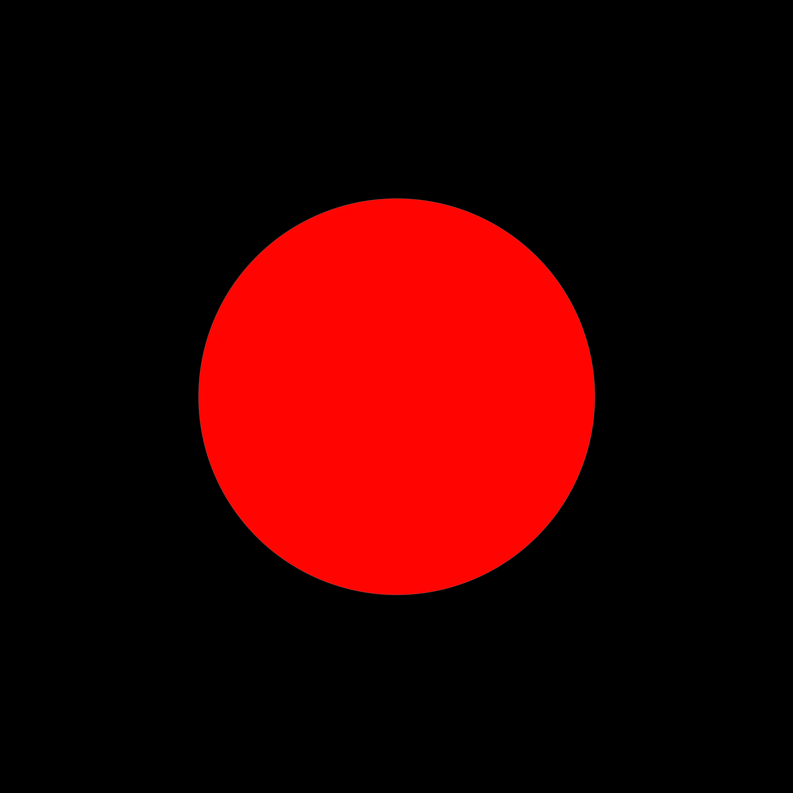
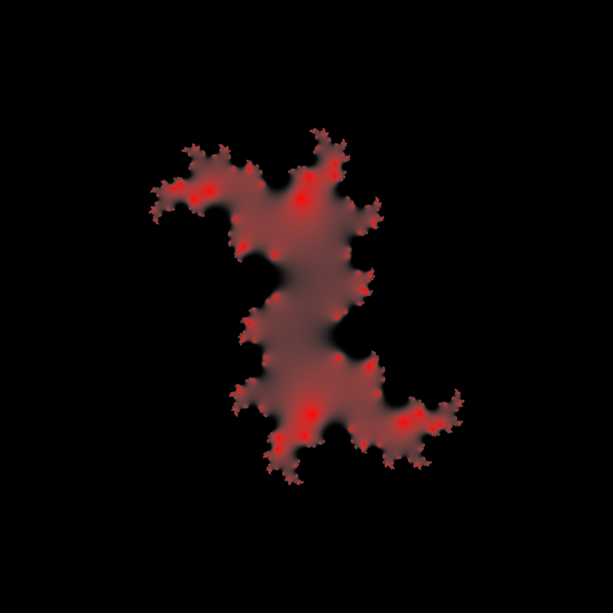

Complex Set Art
Julia set is a set of complex numbers that is studied in the field of complex dynamics. It is defined by a function \(f(z) = Z^2 + C\) of complex domain, where \(C\) is also a point of a complex domain (hyper parameter). We can compute the set by testing if point \(Z\) "converges" towards 0 or "diverges" towards infinity after \(n\) iterations for every pixel of the plane.

Julia set when \(C = 0.0 + 0.0i\)
Julia set when \(C = -0.61 + 0.0i\)

Julia set when \(C = 0.33 + 0.0i\)

Julia set when \(C = 0.33 + 0.5i\)